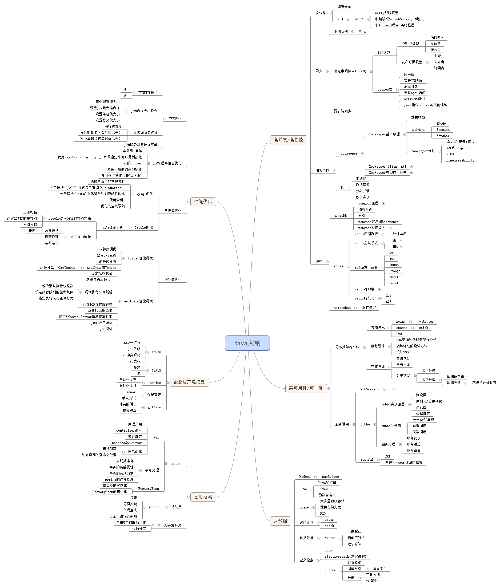

My first paragraph.
https://www.whatled.com/post-6082.html Java大纲关键点如下： 高并发/高性能 多线程 线程安全 NIO NETTY netty线程模型 和前端联合,webSocket,IM聊天 和Android联合,实时推送 异步 本地队列 排队 消息中间件activeMQ JMS规范 点对点模型 消息队列 发送者 接收者 发布订阅模型 主题 发布者 订阅者 activeMQ 跨平台 支持JMS规范 消息持久化 支持Ajax访问 activeMQ监控 java操作activeMQ实例演练 异步转同步 服务协同 Zookeeper Zookeeper基本原理 数据模型 重要概念 ZNode Session Watcher Zookeeper特性 读、写(更新)模式 WAL和Snapshot FIFO Linearizability ZooKeeper Client API create(path, data, flags) delete(path, version) exists(path, watch) getData(path, watch) ZooKeeper典型应用场景 数据发布与订阅（配置中心） 负载均衡 命名服务 锁 本地锁 数据库锁 分布式锁 秒杀实现 缓存 mongoDB mongodb原理 面向集合 动态查询 索引 mongodb客户端Robomongo mongodb常用命令 db.foo.find() show dbs; db.dropDatabase(); db.userInfo.find({age: {$gt: 22}}) db.users.save({name: ‘zhangsan’, age: 25, sex: true}); db.users.update({age: 25}, {$set: {name: ‘changeName’}}, false, true); db.users.remove({age: 132}); ……等等 redis redis原理剖析 一致性哈希 redis主从模式 一主一从 一主多从 redis常用命令 set get lpush lrange hmget hmset redis客户端 jedis jedispool jedisCluster jedisCluster+springMVC整合 redis持久化 RDB AOF memcached 缓存击穿 高可用性/可扩展 分布式架构介绍 导流技术 nginx jvmRouter apache stick lvs 服务设计 SOA架构和微服务架构介绍 领域驱动的设计方法 设计SSO 存储设计 垂直切分 读写分离 水平切分 水平分表 水平分库 数据源路由 数据迁移 不停机存储扩容 服务调用 webService CXF Dubbo dubbo实现原理 协议层 序列化/反序列化 通讯层 数据绑定 dubbo的使用 spring的集成 有端调用 无端调用 服务治理 服务发现 服务过滤 服务路由 restful CXF 自定义restful调用框架 大数据 Hadoop mapReduce Hive Hive的搭建 HiveQL 函数自定义 HBase 大容量数据存储 数据备份方案 PIG 实时计算 storm spark 数据分析 Mahout 协同算法 相似度算法 近邻算法 全文检索 SOLR elasticsearch(建议讲解) lucene 数据模型 创建索引 增量索引 分词 开源分词 分词算法 应用框架 Spring MVC 原理介绍 controller调用 参数绑定 messageConverter 展示优化 模板引擎 动态页面的静态化处理 事务处理 声明式事务 事务的传播属性 事务的实现方式 spring的连接处理 FactoryBean 接口类的实例化 FactoryBean的初始化 持久层 ibatis 搭建 分页实现 代码生成 自定义语句的实现 企业级开发环境 未来5年的编码习惯 代码分层 企业级环境搭建 maven maven打包 jar依赖 jar冲突解决 jar发布 NEXUS 搭建 上传 jenkins 自动化发布 自动化执行 代码审查 sonar 单元测试 git/svn 冲突的解决 提交过滤 性能优化 JVM优化 JVM内存模型 栈 堆 JVM内存大小设置 每个线程栈大小 设置JVM最大堆内存 设置年轻代大小 设置持久代大小 垃圾回收器选择 串行收集器 并行收集器（吞吐量优先） 并发收集器（响应时间优先） JVM服务参数调优实战 JAVA程序性能优化 字符串+操作 使用’system.arraycopy ()’代替通过来循环复制数组 io的buffer 避免不需要的造型操作 使用移位操作代替’a * b’ 数据库优化 Mysql优化 选取最适用的字段属性 使用连接（JOIN）来代替子查询(Sub-Queries) 使用联合(UNION)来代替手动创建的临时表 使用索引 优化的查询语句 Oracle优化 执行计划分析 oracle访问数据的存取方法 全表扫描 通过ROWID的表存取 索引扫描 表之间的连接 排序 – – 合并连接 嵌套循环 哈希连接 服务器优化 Tomcat性能调优 JVM参数调优 禁用DNS查询 调整线程数 Apache集成Tomcat 动静分离，释放Tomcat weblogic性能调优 设置JAVA参数 尽量开启本地I/O 调优执行队列线程 修改默认执行线程数 设定执行队列的溢出条件 设定执行队列监测行为 调优TCP连接缓存数 改变Java编译器 使用Webogic Server集群提高性能 JDBC应用调优 JSP调优 ---------------------------------------------------------------------------- ----------------------------------------------------------------------------  ----------------------------------------------------------------------------